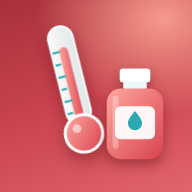

Лихорадка — защитная реакция
Организм поднимает температуру, чтобы бороться с инфекцией, чаще всего вирусной. Сама по себе температура не опасна — важнее, как ребёнок себя чувствует.
Опасна не высокая цифра, а признаки тяжёлого состояния: вялость, отказ от питья, сыпь, затруднённое дыхание. Они собраны в разделе «Когда к врачу».
Цель жаропонижающего — чтобы ребёнку стало легче, а не нормальная температура. Хороший результат — снижение до 38 °C; добиваться 36,6 °C не нужно.
Не лечите сами — сразу звоните врачу или вызывайте скорую 103. Жаропонижающее до 3 месяцев — только по назначению врача.
Как измерять
В подмышке любой возраст
Электронный термометр — самый простой и надёжный способ. Малышам до 4 недель — только так. Подождите сигнала и ещё минуту.
В ухе с 4 недель
Инфракрасный ушной термометр — быстро, удобно ночью. Слегка оттяните ушную раковину назад, чтобы выпрямить слуховой проход.
Не подходит ненадёжно
Полоски и наклейки на лоб, «на ощупь» губами. Во рту и в прямой кишке детям до 5 лет обычно мерить не нужно.
Что делать при температуре
Главное — питьё, лёгкая одежда и наблюдение за самочувствием.
Нужно
- Снять лишнюю одежду и подгузникЛёгкая одежда из дышащих тканей: хлопок, бязь, муслин. Не кутайте, но и не раздевайте догола, если ребёнка знобит.
- Поить часто и понемногуВода, морс, компот, раствор для питья. Грудничка чаще прикладывайте к груди — грудное молоко подходит лучше всего.
- Давать жаропонижающее, если ребёнку плохоОзноб, боль, вялость, капризы — или температура 38,5–39 °C и выше. Если ребёнок играет и пьёт, можно не давать. Детям с пороком сердца, эпилепсией и другими хроническими болезнями — как скажет врач.
- Если ребёнку приятно — обтирать водой комнатной температурыНе холодной. При ознобе, «мраморной» коже и холодных ручках-ножках не обтирайте — укройте и согрейте ручки и ножки.
- Проверять ребёнка ночьюКак дышит, легко ли просыпается, нет ли сыпи.
- Оставить домаПока держится температура — в сад и школу не ходить.
Не нужночто делать не нужно
- Обтирать спиртом, водкой, уксусом, холодной водойСпирт и уксус всасываются через кожу; холод вызывает озноб и спазм сосудов.
- Давать анальгин (метамизол), нимесулид, аспиринДетям из жаропонижающих подходят только ибупрофен и парацетамол.
- Давать жаропонижающее «для профилактики»Оно не предотвращает судороги при температуре и не нужно, если ребёнок чувствует себя нормально.
- Давать ибупрофен и парацетамол одновременно
- Ждать, что после 40 °C будет 36,6 °C за полчасаТак бывает не у всех — и это ни хорошо, ни плохо.
- Будить спящего ребёнка ради жаропонижающегоЕсли спит спокойно и дышит ровно — сон полезнее.
Сколько давать: доза по весу
Доза жаропонижающего считается по весу, а не по возрасту. Укажите вес — памятка посчитает разовую дозу в миллилитрах для детских суспензий, свечей и таблеток.
ИбупрофенНурофен для детей и аналоги · суспензия 100 мг / 5 мл
ПарацетамолПарацетамол детский, Панадол детский · суспензия 120 мг / 5 мл
Другие формы: «форте», свечи, таблеткипо весу
| Препарат | Разовая доза для вашего веса |
|---|---|
| Ибупрофен форте суспензия 200 мг / 5 мл | |
| Ибупрофен, таблетки 200 мг | |
| Парацетамол, свечи Цефекон Д 50, 100, 250 мг | |
| Парацетамол, таблетки 500 мг |
Свечи удобны при рвоте и если ребёнок не может проглотить сироп. Свечи — это тоже парацетамол: не давайте их вместе с сиропом парацетамола.
Если температура не снижается
Лекарство начинает действовать через 30–60 минут. За 1–1,5 часа температура должна снизиться хотя бы на 0,5 °C, а ребёнку — стать легче.
Дали жаропонижающее
Ибупрофен или парацетамол по весу. Засеките время — кнопка «Дали сейчас» запомнит его и подскажет, когда можно следующую дозу.
Через 1–1,5 часа не легче
Если температура не снизилась хотя бы на 0,5 °C и ребёнку по-прежнему плохо — можно дать другое жаропонижающее: после ибупрофена — парацетамол, после парацетамола — ибупрофен.
То же лекарство повторно раньше срока давать нельзя.
И снова нет эффекта
Если ещё через 1–1,5 часа температура не снижается и ребёнку плохо — вызывайте скорую: 103 (с мобильного) или 112.
Большинство лихорадок у детей вызывают вирусы, и они проходят за 2–3 дня. Ребёнок чувствует ваше волнение — спокойный родитель помогает лучше любого лекарства.
Когда звонить врачу и в скорую
103 Срочно: скорая
Звоните сразу, не дожидаясь утра:
- Ребёнку меньше 3 месяцев и температура 38 °C и выше
- Нарушение сознания: трудно разбудить, не узнаёт, бредит
- Судороги
- Выраженное затруднение дыхания, удушье; стонущее, кряхтящее дыхание; втягиваются промежутки между рёбрами
- Бледная, серая, «мраморная» или синюшная кожа
- Сыпь, которая не бледнеет при надавливании стаканом
- Не может прижать подбородок к груди; у малыша выбухает родничок
- Слабый, стонущий или непрерывный пронзительный плач
- Сильная головная боль или боль в животе
- Нарушение координации движений
- Полный отказ от питья или не может пить
- Температура выше 40 °C, которая не снижается обычными жаропонижающими
- Кровотечение из любого места: нос, рот, кишечник
- Необычно тяжёлое, по вашим ощущениям, состояние ребёнка
Врач в ближайшие 12–24 часа
Позвоните в поликлинику или вызовите врача на дом, если:
- Ребёнку 3–6 месяцев и температура 39 °C и выше
- Температура выше 38 °C держится больше 3 суток
- Температура поднялась снова после нескольких дней нормальной
- Ребёнку становится хуже день ото дня
- Одышка, хрипы или свист при дыхании
- Частый, приступообразный кашель
- Боль в ухе или горлеНочью срочно искать ЛОРа не нужно: дайте обезболивающее, а утром — к врачу.
- Сыпь, рвота или жидкий стул на фоне температуры
- Мало пьёт и мало мочится, сухие губы и язык, плачет без слёз
- Отёк или боль в суставе, не наступает на ногу
Если начались судороги
- Положите ребёнка на бок на ровную поверхность, уберите рядом острые и твёрдые предметы.
- Ничего не кладите в рот, не держите и не трясите ребёнка, не поите.
- Засеките время и вызывайте скорую 103.
- Оставайтесь рядом, пока приступ не закончится.
Судороги на фоне температуры бывают у детей от 6 месяцев до 5 лет. Обычно они короткие и проходят сами, но в первый раз ребёнка обязательно должен осмотреть врач. Жаропонижающее судороги не предотвращает.

Сохраните памятку на телефон
После первого открытия памятка работает без интернета — в очереди к кабинету, в дороге, без мобильной сети. Добавьте её на экран «Домой», чтобы открывать как приложение.
Лечим ребёнка, а не градусник
Если сомневаетесь — позвоните врачу. Вы знаете своего ребёнка лучше всех.